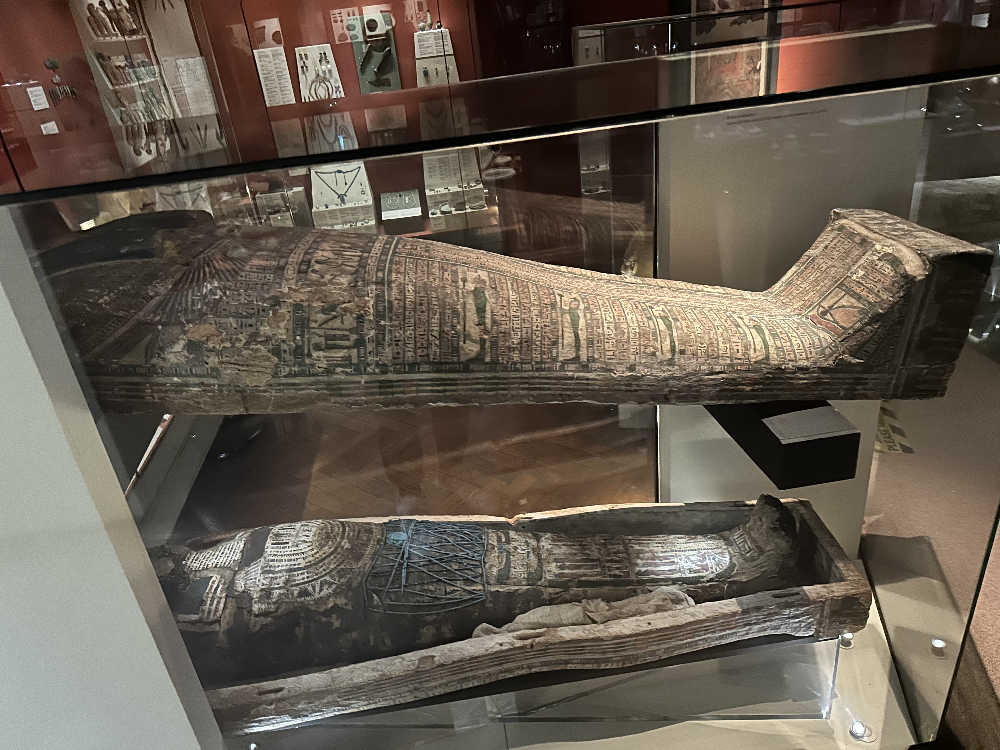
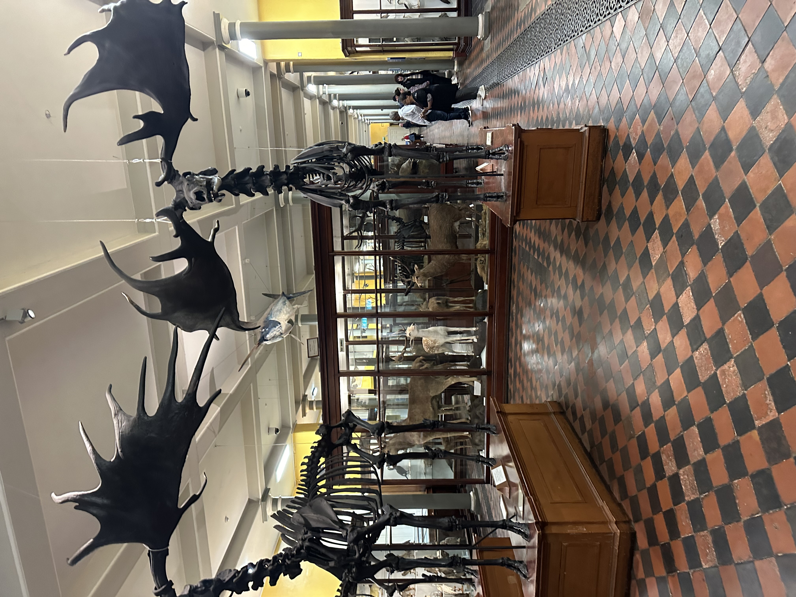
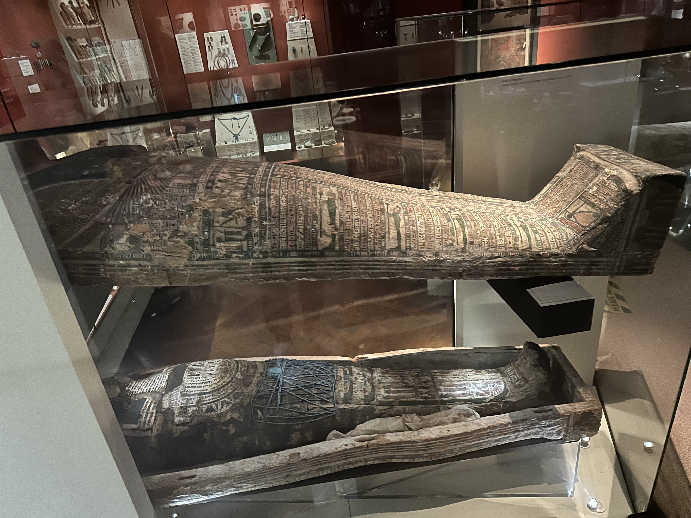
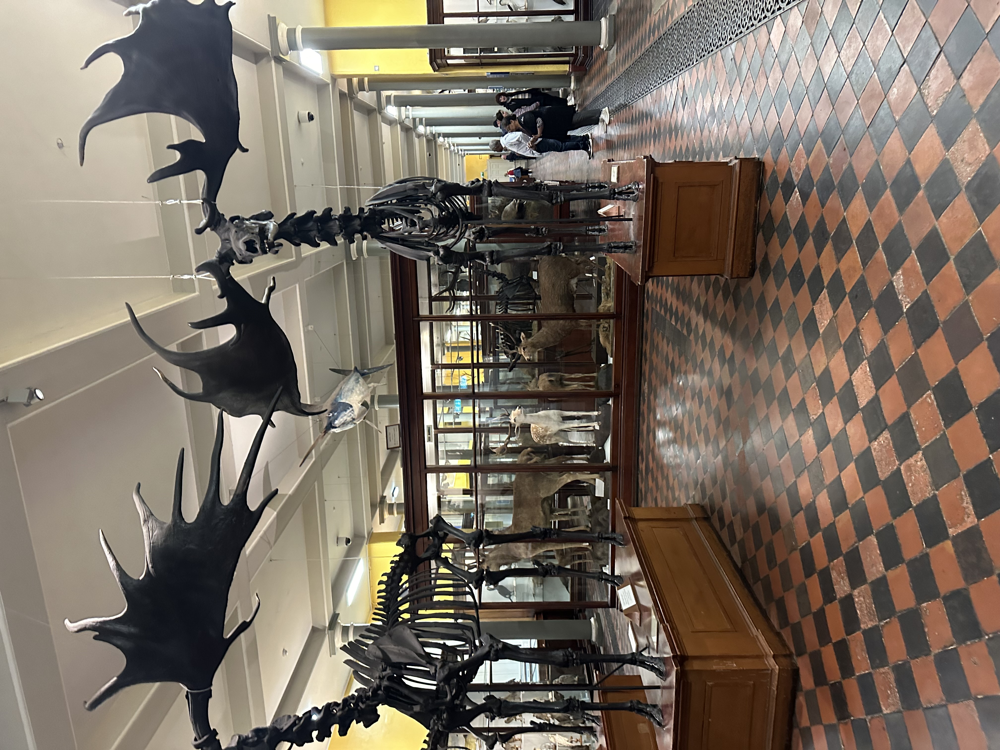
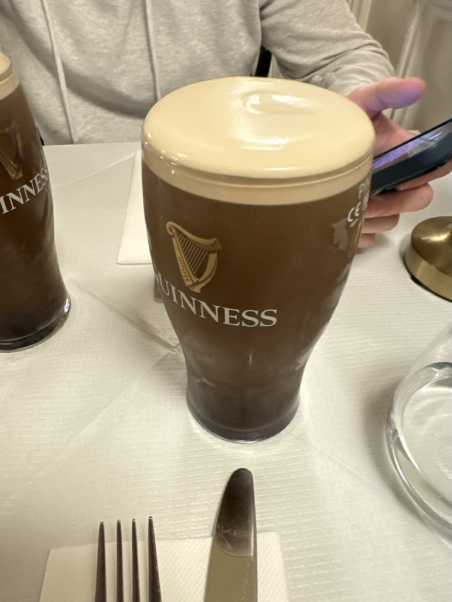
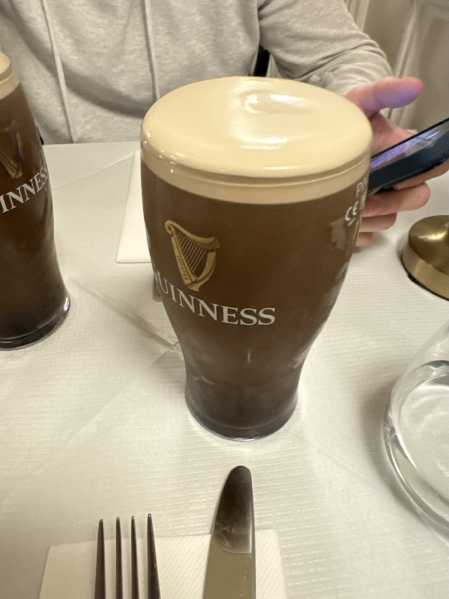
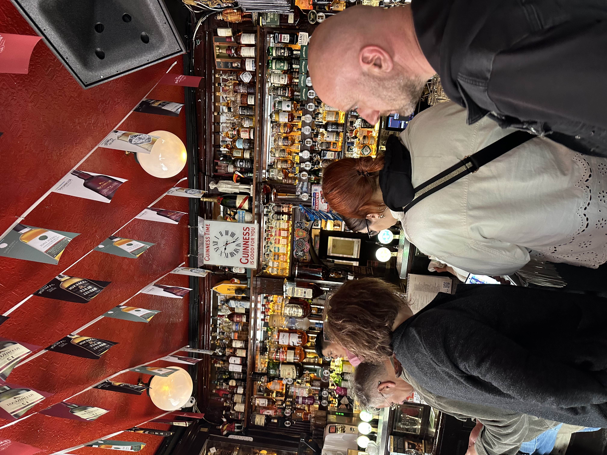
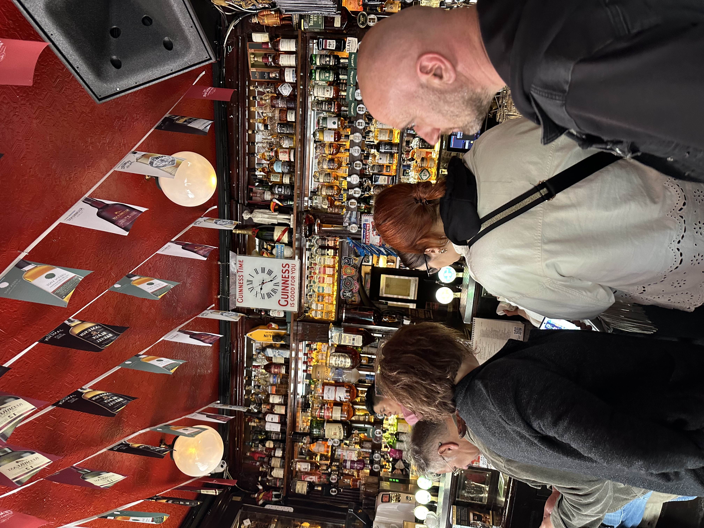

Today I got a tour of the Docklands! I was lucky to have a very smart tour guide who was able to provide so much context regarding the history of Dublin. It is amazing how in the 1980s there were no buildings in this city and it was third world. Now, amazing companies like Google have came here to make it the tech capital of Europe.


 





 


 
